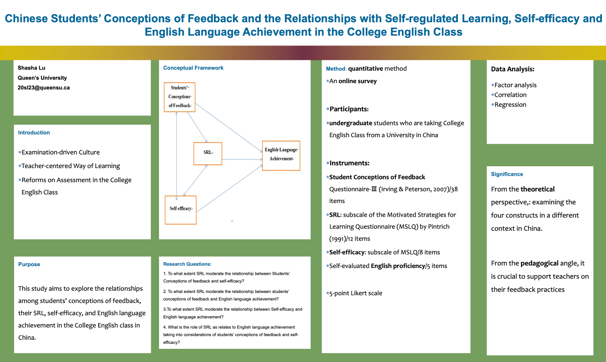

Theme 5 Poster Presentations
5.1 Day 1: January 27, 2022
5.1.1 Conversational agents in higher education- A scoping review
Authors: Daniela Pereira, Filipe Falcão, Lilian Costa, Brian S. Lunn, José Miguel Pêgo, & Patrício Costa
Institution: University of Minho
Recommended Citation:
Pereira, D., Falcão, F., Costa, L., Lunn, B., Pêgo, J. K., & Costa, P. (2022, January 27). Conversational agents in higher education- A scoping review [Poster presentation]. Advancing Assessment and Evaluation Virtual Conference: Queen’s University Assessment and Evaluation Group (AEG) and Educational Testing Services (ETS), Kingston, Ontario, Canada.
Abstract
Background: With AI’s advancing technology, pedagogical changes are occurring continuously, and, among all the AI applications, chatbots are becoming more and more intertwined in our daily lives. While these can be used in various disciplines, they play a particularly significant role in the digital transformation of education, providing students and educators with tools. Summary of work: In this work, we present a scoping literature review of chatbots in higher education (HE), investigating the areas where chatbots have already been applied and their pedagogical roles. The main benefits and challenges of chatbots were also explored. To understand if the quality of the chatbots was evaluated, the selected papers were assessed using the usability criteria defined in the International Organization for Standards (ISO) 9241-11 guidelines. Summary of results: A total of 1209 citations were found while searching recognized digital databases. After abstract and full text reading, 15 publications were considered. Backward and forward reference checking yielded a total of 2 studies. In total, 17 studies were included. Most of the selected papers employed chatbots for educational purposes, administrative support, or a combination of these. Discussion and Conclusion: The study’s findings give a complete overview of previous research on the use of chatbots in HE, including information on existing studies, advantages, and challenges. Research demonstrates the versatility and the promising aspects of this type of support system for university education. While studies have emphasized the potential benefits of chatbots in education, problems such as technological constraints and the necessity for a natural language environment, among others, have also been noted, making the adoption process challenging. Despite the increased interest around chatbots, there is a lack of chatbot integration into formal learning settings, meaning that there is still work that needs to be done.
Poster

5.1.2 What the research says about online assessment in education
Authors: Judicaël Alladatin, Insaf Al-Chikh, & Eric Assogba
Institution: Université Mohammed VI Polytechnique
Recommended Citation:
Alladatin, J., Al-Chikh, I., & Assogba, A. (2022, January 27). What the research says about online assessment in education [Poster presentation]. Advancing Assessment and Evaluation Virtual Conference: Queen’s University Assessment and Evaluation Group (AEG) and Educational Testing Services (ETS), Kingston, Ontario, Canada.
Abstract
Assessment is considered a major concern in education due to the obvious function it plays with assessing individual student development as well as in measuring teaching effectiveness. Today, with the rapid growth of online and blended learning in education and its implementation in many education systems after COVID 19, online assessment has created new issues specific to the assessment of distance student performance. This article proposes a Strengths, Weaknesses, Opportunities, Threats (SWOT) analysis of the assessment practices and models from students, teachers, and institutions perceptions. The results indicate that the use of online learning assessments has many strengths, and opportunities, such as the capacity to perform tests on-demand and at any time, direct feedback to users, students’ quick access to test results, and more precise evaluation of students’ learning. Therefore, online assessment systems also have several weaknesses and threats, the technology is also not faultless and that internet connectivity issues may arise. There’s also the price of the online evaluation software to be considered. In addition to teachers’ and students’ limited knowledge of technology.
Poster
5.1.3 A conversational agent to measure student learning: Conversation-based assessment
Authors: Seyma N. Yildirim-Erbasli & Okan Bulut
Institution: University of Alberta
Recommended Citation:
Yildirim-Erbasli, S. N., & Bulut, O. (2022, January 27). A conversational agent to measure student learning: Conversation-based assessment [Poster presentation]. Advancing Assessment and Evaluation Virtual Conference: Queen’s University Assessment and Evaluation Group (AEG) and Educational Testing Services (ETS), Kingston, Ontario, Canada.
Abstract
One of the main goals of educational assessments is to obtain valid scores that reflect students’ true ability levels. A major threat against the validity of educational assessments is the presence of non-effortful responses from unmotivated students. Due to insufficient interaction between learners and the non-interactive assessment environment, some students may get disengaged and fail to show effortful response behavior during the test. Unlike non-interactive assessments, interactive assessments (e.g., assessments involving one-on-one tutoring) allow students to work on a particular task and then review their responses to gain a better understanding of what they know. Therefore, interactive assessments can keep the students engaged in the assessment process while enabling them to communicate their knowledge more effectively. However, implementing interactive assessments in practice can be very challenging. Although such assessments are easy to use with a small number of students, they become more expensive and harder to implement with a large group of students. A promising solution to this problem is to create a conversation-based assessment (CBA) harnessing artificial intelligence (AI). The purposes of this study are twofold. First, we will create and implement an AI-based CBA that measures student learning and provides feedback interactively. Second, after students experience the CBA, we will examine students’ attitudes towards CBA using an online survey. The CBA will be designed for an undergraduate course using Rasa––an AI-based system and deployed to a user-friendly environment (e.g., Google Chat). The CBA will ask questions, provide feedback on the quality of student responses, and hold social interactions through the natural flow of conversation. The findings of this study will help us understand the potential of CBAs in advancing conventional assessments (e.g., computer-based assessments) and increasing student motivation through interactivity that is missing in conventional assessments.
Poster
5.1.4 Impact of TOEFL Primary Tests (Remote-Proctored Tests) on Young Test-Takers
Authors: Jia Guo
Institution: Queen’s University
Recommended Citation:
Guo, J. (2022, January 27). Impact of TOEFL Primary Tests (Remote-Proctored Tests) on Young Test-Takers [Poster presentation]. Advancing Assessment and Evaluation Virtual Conference: Queen’s University Assessment and Evaluation Group (AEG) and Educational Testing Services (ETS), Kingston, Ontario, Canada.
Abstract
This study investigates the influence of online remote proctored young learners’ test from test-takers and parents’ perspective. This novel test delivery mode offers solution to the current situation of unexpected global COVID-19 pandemic where conventional on-site proctored tests are suspended amid the closure of test centers responding to the social distance requirement. In the long run, it also offers an alternative option to replace the conventional logistically complex and administratively challenging test delivery mode. In the context of young learners’ English tests, ETS started offering remote-proctored delivered TOEFL Primary tests as an option for test-takers(ETS, 2021). There have been 825 young learners taking part in the trial version of the exam by the end of January 2021 in China(Chinanews, 2021). However, there is an absence of published research examining the influence of such a novel test delivery mode, and this study intends to bridge the gap. To achieve the research goal, Chapelle(2008)‘s interpretive framework will be adopted to collect evidence. The multifaceted mixed-method approach will be used to investigate the influence of test delivery mode on young learners’ test performance (explanation inference), test-takers’ and their parents’ perception and behavior (evaluation inference), and their interpretations and uses of test scores (utilization inference). The overall score and sub-scores of remote-proctored and on-site TOEFL Primary obtained from the official database will be compared and analyzed through descriptive statistics. Online questionnaires and interviews will be conducted among test-takers and parents participating in remote-proctored and on-site TOEFL Primary to obtain information about their perception, behavior, and interpretation and use of the test score. Quantitative and qualitative methods will be used to analyze the data. Demographic and geographic information will be taken into consideration in the analysis to help elicit the influence on test accessibility among different groups of population.
Poster
5.1.5 Development of an accessible and sensitive measure of sustained attention; The 3D Multiple Object Tracking task
Authors: Taryn Perelmiter & Dr. Armando Bertone
Institution: McGill University
Recommended Citation:
Perelmiter, T., & Bertone, A. (2022, January 27). Development of an accessible and sensitive measure of sustained attention; The 3D Multiple Object Tracking task [Poster presentation]. Advancing Assessment and Evaluation Virtual Conference: Queen’s University Assessment and Evaluation Group (AEG) and Educational Testing Services (ETS), Kingston, Ontario, Canada.
Abstract
Current standardized measures of sustained attention are often limited due to their lack of generalizability, impurity of construct assessment, and inaccessibility for individuals with limited cognitive and/or language abilities. The 3D Multiple Object Tracking (3D-MOT) task is an intuitive, non-verbal paradigm previously demonstrated to isolate and assess sustained attention by manipulating the amount of time participants are asked to visually track target items from physically indistinguishable distractor items. We aimed to assess whether sustained attention measured using the 3D-MOT task would correlate to that of the Conners Continuous Performance Task (CPT-3), a current and clinically validated test of attention. Typically developing participants (n = 48, aged 13 to 30 years old) were recruited and were tested on both tasks. Exclusion criteria included obtaining a CPT-3 d’ T-score greater than or equal to 60, indicating problems with general attention. A correlation was conducted comparing the percent change in average top speed score (% change MOT score) between the longest (15 seconds) and shortest (5 seconds) trials in the MOT and the CPT-3 Hit Reaction Time (HRT) Block Change T-score, a sustained attention metric of the CPT-3. Results indicated that a small yet significant positive correlation (r = .299, p = .019) between the % change MOT score and the HRT Block Change T-score on the CPT-3. This result supports the potential use of the 3D-MOT task as non-verbal measure of sustained attention in typically-developing participants. Future directions include replicating this study with a larger sample size, comparisons by age group (e.g., children, adolescents, adults), and comparisons of clinical (i.e., attention difficulty) versus non-clinical participants. This study represents a preliminary step towards validating the 3D-MOT task as an accessible and sensitive approach for assessing sustained attention for typically and atypically-developing populations.
Poster
5.1.6 Once upon an Algorithm: A suggestive approach for assessing item quality, usability and validity of Automatic Item Generation
Authors: Filipe Falcão, Daniela S. M. Pereira, Nuno Gonçalves, Patrício Costa, & José M. Pêgo
Institution: School of Medicine, University of Minho
Recommended Citation:
Falcão, F., Pereira, D. S. M., Gonçalves, N., Costa, P., & Pêgo, J. M. (2022, January 27). Once upon an Algorithm: A suggestive approach for assessing item quality, usability and validity of Automatic Item Generation [Poster presentation]. Advancing Assessment and Evaluation Virtual Conference: Queen’s University Assessment and Evaluation Group (AEG) and Educational Testing Services (ETS), Kingston, Ontario, Canada.
Abstract
Background and objective: Automatic Item Generation (AIG) generates testing items through computer algorithms. The quality, usability and validity of AIG remains unexplored. This paper aims to assess AIG in medical assessment. Methods: Study I – Participants with different levels of clinical knowledge and item writing experience developed items manually and using AIG. Items were compared regarding quality and usability; Study II – Items generated by AIG were inserted in a summative exam in the area of surgery. Psychometric analysis were employed to inspect AIG’s validity and item quality. Results: Study I – Items generated by AIG presented quality. Time spent developing cognitive models and number of items generated did not vary between participants. Study II – Items generated by AIG presented quality, were adequate for testing student’s knowledge and presented evidence of validity. Conclusions: AIG is a valid method to produce numerous quality items in an easy and cost-effective process.
Poster
5.1.7 Engineering a Lasting Future: Investigating Influences on the Self-Efficacy of Female Engineering Students
Authors: Nerissa Mulligan
Institution: Queen’s University
Recommended Citation:
Mulligan, N. (2022, January 27). Engineering a Lasting Future: Investigating Influences on the Self-Efficacy of Female Engineering Students [Poster presentation]. Advancing Assessment and Evaluation Virtual Conference: Queen’s University Assessment and Evaluation Group (AEG) and Educational Testing Services (ETS), Kingston, Ontario, Canada.
Abstract
Females and males have equal capabilities in math and science and are able to master mathematical and scientific concepts equally well, however, females continue to be underrepresented in Science, Technology, Engineering and Mathematics (STEM) education and professions. Numerous studies have shown that many female students leave engineering because of low self-efficacy and confidence, and many who persist have lower self-efficacy and confidence than their male counterparts. Self-efficacy is defined as an individual’s belief in their own ability to achieve an outcome and is strongly influenced by academic accomplishments. Exploring the potential relationship between engineering programs and the self-efficacy of engineering students is critical to understanding student satisfaction, achievement, and retention in engineering programs. This study aims to fill the gap in knowledge regarding the differences in the sources of self-efficacy of male and female engineering students and the effects of the engineering curriculum on students’ self-efficacy in the Canadian context. The research will focus on 1) measuring and identifying the sources of self-efficacy of male and female first-year engineering students; 2) investigating whether the sources of self-efficacy are different for male and female first-year engineering students and whether those sources change over time; and 3) measuring the effects of the first-year engineering curriculum on students’ self-efficacy. Data will be gathered using an instrument developed for the study, based on several existing self-efficacy instruments, which will involve first-year engineering students at a mid-sized Canadian university completing a survey at the beginning and end of their first academic year. The results of this study will help guide university engineering programs toward closing the gender gap in STEM.
Poster
5.1.8 Customizing Item Selection with Engagement in Computerized-Adaptive Tests
Authors: Guher Gorgun & Okan Bulut
Institution: University of Alberta
Recommended Citation:
Gorgun, G., & Bulut, O. (2022, January 27). Customizing Item Selection with Engagement in Computerized-Adaptive Tests [Poster presentation]. Advancing Assessment and Evaluation Virtual Conference: Queen’s University Assessment and Evaluation Group (AEG) and Educational Testing Services (ETS), Kingston, Ontario, Canada.
Abstract
Purpose and Introduction: Test-taking disengagement is a significant validity threat for both computer-based and computerized adaptive tests (CATs), especially for those characterized as “low-stakes.” It introduces construct-irrelevant variance (Finn, 2015; Haladyna & Downing, 2004; Kong et al., 2007) and typically leads to the underestimation of examinees’ true ability. In CATs, disengaged responses also jeopardize item selection as the selection of optimal items highly depends on the quality of responses. To minimize the negative influence of test-taking disengagement, the item selection algorithm in CATs can be modified to select the items that are not only suitable for the examinee’s ability level but also engaging. Proposed Method: In this study, we propose to modify the maximum Fisher information (MFI) method to tailor the CAT item selection algorithm based on both each examinee’s ability and engagement levels. With the proposed method, two sets of item information functions (IIFs) are estimated: one based on the examinee’s interim ability, and another based on the examinee’s test-taking engagement. Then, the product of these IIFs can be used to select the most optimal item. Results: We conducted a post-hoc simulation study using real data from 21,811 test-takers. We estimated two sets of item parameters based on dichotomous item responses (used for estimating ability) and dichotomized response times such that 1=optimal time use, 0=rapid guessing/slow responding (used for estimating engagement) and incorporated them into item selection in the CAT simulation. We found that the modified MFI method outperformed the conventional MFI method based on the correlations between true and estimated ability values, bias, and mean conditional standard error of measurement. The positive impact of incorporating test-taking engagement into item selection was the most evident for shorter tests (e.g., 20 items). Discussion: Our proposed method offers a proactive remedy to minimize disengagement in an operational low-stakes CAT setting.
Poster
5.1.9 Assessing Listening Difficulties of Hard of Hearing Students in General Education
Authors: Uvini Colonne
Institution: Queen’s University
Recommended Citation:
Colonne, U. (2022, January 27). Assessing Listening Difficulties of Hard of Hearing Students in General Education [Poster presentation]. Advancing Assessment and Evaluation Virtual Conference: Queen’s University Assessment and Evaluation Group (AEG) and Educational Testing Services (ETS), Kingston, Ontario, Canada.
Abstract
Classroom Introduction: With the widespread practice of early identification of hearing loss, advancement in hearing technology, and improvement of legislation have permitted hard of hearing students (HHSs) to experience education in each of the ten provinces and three territories in Canada. However, it is doubtful whether general education classrooms (GECs) are always adequately meet listening needs of this group of students with a compromised auditory system. Optimum classroom listening enables accessibility to language and communication, which are critical in students’ academic success and positive social development. Aim: The purpose of this study is to determine listening difficulties faced by hard of hearing students in general education classrooms from both teachers’ and students’ perspective. Methods and analysis: A descriptive cross-sectional study will be conducted as an online survey through Qualtrics platform. Participants will be hard of hearing students attend in Eastern Ontario secondary GECs and their general education teachers. The teacher and student versions of a standardized questionnaire named Listening Inventory for Education-Revised (LIFE-R) LIFE-R will be used to evaluate teacher and student appraisals of the listening challenges in GECs. LIFE-R is composed of 15 questions which need to rate listening challenges in different situations following a scale between 1 to 5, representing no challenges to almost always challenged respectively. Quantitative data will be analysed using descriptive and inferential statistics. Ethics and dissemination: Ethical clearance for this study will be obtained from General Research Ethics Board at Queen’s University, ON, and Eastern Ontario School Boards. Institutional clearance will be taken from the administration of individual public schools. Written informed consent will be obtained from all participants. Results will be disseminated, to local stakeholders and participants, via local and international conferences and publications in peer-reviewed journals.
Poster
5.2 Day 2: January 28, 2022
5.2.1 Automated Essay Scoring in Multiple Languages: An Application of BERT to Persian Essay Scoring
Authors: Tahereh Firoozi & Mark Gierl
Institution: University of Alberta
Recommended Citation:
Firoozi, T., & Gierl, M. (2022, January 28). Automated Essay Scoring in Multiple Languages: An Application of BERT to Persian Essay Scoring [Poster presentation]. Advancing Assessment and Evaluation Virtual Conference: Queen’s University Assessment and Evaluation Group (AEG) and Educational Testing Services (ETS), Kingston, Ontario, Canada.
Abstract
One of the challenges in educational assessment is to reliably and efficiently evaluate students’ written tasks. Human raters usually perform this task, but we need methods that scale more easily to large online courses or high stakes test-taking settings where there may be thousands or even millions of submissions that must be graded. Automatic essay scoring (AES) solves this problem by using computational models to automatically evaluate students’ written tasks. Recently, with the advent of deep learning models, the accuracy of AES systems has significantly improved in a way that AES systems can now perform comparably to human raters in terms of their reliability and accuracy (Dong, Zhang, & Yang, 2017). Studies have shown that deep learning models, including bidirectional transformers, can achieve state-of-the-art accuracy in AES (e.g., Lan et al., 2019). However, AES studies to-date have focused on exclusively on the English language with little focus on low resource languages such as Persian. The purpose of this study is to investigate the performance of BERT, a deep bidirectional transformer, for language understanding (Devlin, Chang, Lee, & Toutanova, 2018) in the context of Persian essay scoring. BERT is a deep learning model in which every output element is connected to every input element, and the weightings between these elements are dynamically calculated based upon their connection. We used the BERT model to score 1,432 essays written by Persian speakers. The model was trained using 60% of the essays (n=860) which contained labels assigned by the human raters based on the mastery level of each essay (i.e., elementary, intermediate, and advanced). Then, the accuracy of the trained model was tested on the remaining 40% of the essays (n=572) which were unseen by the model. The model was very reliable (Cohen Kappa= 0.86) in predicting the essay scores producing a classification outcome that can be described as “almost perfect agreement” (Landis & Koch, 1977). Results of this study bring evidence to the efficacy and dependability for using AES models to score written tasks in multiple languages.
Poster
5.2.2 Feedback Literacy Framework in the E-Assessment Context
Authors: Tarid Wongvorachan, Ka-Wing Lai, Okan Bukut, & Yi-Shan Tsai
Institution: University of Alberta
Recommended Citation:
Wongvorachan, T., Lai, K., Bukut, O., & Tsai, Y. (2022, January 28). Feedback Literacy Framework in the E-Assessment Context [Poster presentation]. Advancing Assessment and Evaluation Virtual Conference: Queen’s University Assessment and Evaluation Group (AEG) and Educational Testing Services (ETS), Kingston, Ontario, Canada.
Abstract
For students, feedback received from their instructors can make a big difference in their learning by translating their assessment performance into future learning opportunities (Watling & Ginsburg, 2019). To date, researchers have proposed various feedback literacy frameworks, which concern one’s ability to interpret and use feedback for their learning, to promote students’ feedback engagement by repositioning them as active participants in the learning process (Carless & Boud, 2018). However, the current feedback literacy frameworks have not been adapted to digital or e-assessment settings despite the increasing use of e-assessments (e.g., computer-based tests, intelligent tutoring system) in practice. To address this gap, this conceptual paper introduces a feedback literacy model in the context of e-assessments to present an intersection between e-assessment features and the ecological model of feedback literacy for more effective feedback practices in digital learning environments. The general feedback literacy models posit that students’ action on feedback can be influenced by the three dimensions of engagement (e.g., feedback appreciation aka cognitive engagement), contextual (e.g., curriculum), and individual (e.g., students’ expertise on subject matter) (Chong, 2021). When applying this framework to e-assessments, personalized feedback and students’ digital literacy can be attributed to the engagement dimension, while the use of computer-mediated communication (e.g., forum) and digital score reporting software can be attributed to the contextual dimension, and students’ acceptance to e-assessments, including their perceived usefulness and credibility of the platform, could be attributed to the individual dimension of the model (Adenuga et al., 2019; Bulut et al., 2019, 2020; Liu et al., 2015). Aside from advocating for effective feedback practices, this paper will also demonstrate how to support the validity of score interpretations from e-assessments (AERA et al., 2014).
Poster

5.2.3 Canoes, not canals: Assessing emergent learning in contemporary classrooms
Authors: Michael Holden
Institution: Queen’s University
Recommended Citation:
Holden, M. (2022, January 28). Canoes, not canals: Assessing emergent learning in contemporary classrooms [Poster presentation]. Advancing Assessment and Evaluation Virtual Conference: Queen’s University Assessment and Evaluation Group (AEG) and Educational Testing Services (ETS), Kingston, Ontario, Canada.
Abstract
Current research in classroom assessment is troubled by inconsistencies between a prevailing formative assessment framework and the kinds of learning that framework advances. On the one hand, scholars across the field emphasize formative assessment as an adaptive process, promoting inference and iteration as central concepts (Andrade, 2013; Earl, 2007; Kane, 2006). Since we cannot peek inside students’ heads to measure whether they have learned something, or how well they have learned it, classroom assessment relies upon a teacher’s ability to make adaptive inferences about what students are learning and how that learning might proceed (Bennett, 2011; Earl, 2007; Popham, 2009). At the same time, this adaptability is directly contradicted by widespread descriptions of learning as a fixed, predictable outcome (Stobart, 2008). Learning outcomes and progressions – two hallmarks of contemporary formative assessment – are often presented as “blueprints for instruction” that move learning from the teacher and curriculum to individual students in predictable patterns (Brookhart, 2003; Newton, 2017; Stobart, 2008). The purpose of this paper is to examine these contradictions and to call attention to emergent learning (novel and unpredictable learning that unfolds alongside instruction and assessment; Bolden & DeLuca, 2016) as a central feature of classroom assessment. To do so, I employ a critical analysis of contemporary formative assessment research. In particular, I argue that without a framework that accounts for formative assessment’s iterative and inferential core, teachers and researchers will struggle to achieve the kinds of classroom assessment we claim to hold dear. Emergent learning offers just such a framework, positioning assessment as “a horizon rather than a fixed spot” (Stobart, 2008, p. 156) such that teaching and learning are being formed. Such conceptions more closely reflect the spirit of formative assessment (Crossouard, 2011; Swaffield, 2011) and articulated goals of engaging students as meaningful actors in the classroom (Friesen, 2009).
Poster
5.2.4 Binary and Nonbinary Gender Groups’ Impression of and Preference for Computer Science and Health Fields as College Majors: A Structural Equation Modeling
Authors: Yue Mao, Sirui Wu, Jake E. Stone, & Amery D. Wu
Institution: University Of British Columbia
Recommended Citation:
Mao, Y., Wu, S., Stone, J. E., & Wu, A. D. (2022, January 28). Binary and Nonbinary Gender Groups’ Impression of and Preference for Computer Science and Health Fields as College Majors: A Structural Equation Modeling [Poster presentation]. Advancing Assessment and Evaluation Virtual Conference: Queen’s University Assessment and Evaluation Group (AEG) and Educational Testing Services (ETS), Kingston, Ontario, Canada.
Abstract
The purpose of this study was to compare male, female, and non-binary gender groups’ impression of and preference for computer science (CS) and health fields (HL), two fields that are high in demand and short in labor supply. Gender gaps persist in CS and HL college majors. It is essential to investigate these gaps at an early stage. Thus, the current study investigated the “prospective” students’ impression of and preference for CS and HL based on 13,569 participants’ responses to the College Major Preference Assessment. Compared to males, a smaller proportion of females chose CS (2% vs 6%), and more females chose HL as their favorite (23% vs 14%). Significant gender differences were found in both latent impression and preference using structural equation modelling. Compared to male youth, female youth held a statistically significant lower impression of and preference for CS, and the opposite was found for HL. As for the binary gender group, their choice was more akin to that of the male group for both CS and HL; The only difference is that their impression of HL was noticeably more positive. Although our study was purely about individuals’ impression and preference, the findings on gender difference were consistent with the reports of “actual major.” This consistency supports the belief that gender difference in the actual major was reflective of the difference in impression and preference (e.g., Gemici & Wiswall, 2014; Turner & Bowen, 1999). Thus, understanding how early impression and preference are formed is worth a future study and is crucial to promoting gender equity. To our best knowledge, this study is the first to reveal the nonbinary group’s inclination towards college majors. Future investigation can investigate why their impression and preference are more akin to males.
Poster
5.2.5 How do you feel about hearing practicing teachers’ thoughts?: Examining pre-service teachers’ perceptions of assessment with a control-value theory lens
Authors: Kendra Wells, Bryce S. Dueck, & Lia M. Daniels
Institution: University of Alberta
Recommended Citation:
Wells, K., Dueck, B. S., & Daniels, L. M. (2022, January 28). How do you feel about hearing practicing teachers’ thoughts?: Examining pre-service teachers’ perceptions of assessment with a control-value theory lens [Poster presentation]. Advancing Assessment and Evaluation Virtual Conference: Queen’s University Assessment and Evaluation Group (AEG) and Educational Testing Services (ETS), Kingston, Ontario, Canada.
Abstract
Purpose: The purpose of this poster is to describe pre-service teachers’ emotions in response to learning about classroom assessment through “Teacher Talks” – video interviews with practicing teachers designed to link theory to practice. Context: Assessment is an emotional experience for teachers and students (Brackett et. al, 2013; Kiuru et. al, 2020). University Education programs offer opportunities for pre-service teachers to learn about assessment theory and practice. During this time, students begin to experience assessment from an in-service teacher perspective which may introduce emotions. Control-value theory proposes that certain emotions are elicited by varying levels of value and control appraisals about a learning situation. Pekrun (2006) theorizes that frustration and enjoyment are oppositely valenced activity emotions elicited from perceptions of low control or from high control and value respectively. Methodology: As part of the assessment course, students (n=184) watched “Teacher Talks” and rated the extent to which the videos supported their sense of control and value. We measured several emotional responses including frustration and enjoyment. Results: We used two regression analyses to test the relationship between control and value appraisals and emotions. A value appraisal was more significantly tied to frustration and enjoyment than a control appraisal. Control (b=-.029, p=0.664) and value (b=-.573, p<.001) were negative predictors of frustration and explained 33.7% of the variance. Control (b=.134, p=.019) and value (b=.673, p<.001) were positive predictors of enjoyment and explained 54.6% of the variance. Discussion: These results indicate that pre-service teachers who valued and perceived greater control related to assessment through the Teacher Talks felt more enjoyment. In contrast, when the students did not value the Teacher Talks, they became frustrated. As instructors design opportunities to learn about classroom assessment it is important to maximize perceptions of control and value.
Poster
5.2.6 Assessing Identity Awareness and Cultural Responsiveness for Pre-service Teachers in Quebec: Development of a Province Wide Tool
Authors: Welly Minyangadou Ngokobi
Institution: McGill University
Recommended Citation:
Minyangadou Ngokobi, W. (2022, January 28). Assessing Identity Awareness and Cultural Responsiveness for Pre-service Teachers in Quebec: Development of a Province Wide Tool [Poster presentation]. Advancing Assessment and Evaluation Virtual Conference: Queen’s University Assessment and Evaluation Group (AEG) and Educational Testing Services (ETS), Kingston, Ontario, Canada.
Abstract
Assessment and Evaluation are means of measuring learners’ understanding of the knowledge transferred to them. When it comes to teacher training, pre-service teachers are assessed and evaluated throughout their certifications in various ways depending on the institution through which they undergo said training. As learners themselves and regardless of the training program they subscribe to, pre-service teachers must all successfully demonstrate mastery of all professional competencies as required by the Ministry of Education. “Competency 1: To act as a cultural facilitator when carrying out duties” and “Competency 8: Support student’s love for learning” being two of them. Pedagogy that engages in deep consideration of the intersectionalities that come with student diversity is taught in many teacher training programs. However, how thorough and consistent are its assessments and evaluations across universities? In other words, how do academic institutions ensure that their pre-service teachers have the required knowledge and tools to successfully lead a multicultural classroom and navigate complicated situations that stem from the students’ racial, social, and gendered differences? I contribute to the ongoing conversations around the importance of student identity awareness and cultural responsiveness in learning environments through developing a preliminary framework and tool for assessing these professional competencies. The research is fueled by theoretical considerations rooted in Dewey’s concept of Reformed Education. I review current assessments on teacher’s cultural responsiveness and identity awareness, and analyze them through a critical race theory lens to create a novel assessment contextualized to the QEP. I will present a preliminary comprehensive assessment and evaluation grid that measures, in a fair and equitable manner across university programs, pre-service teachers’ student identity awareness and cultural responsiveness. This assessment and evaluation grid must be seamlessly implementable and adaptable to all university teacher training programs and must enable pre-service teachers to practice, reflect on, and most importantly, receive timely, specific, and pertinent feedback on their demonstration of knowledge and mastery of Competency 1 and 8 of the QEP in learning situations. Keywords: pedagogy, curriculum, assessment and evaluation, teacher training, identity awareness, cultural responsiveness.
Poster
5.2.7 Teaching Asynchronously during the COVID-19 Pandemic: Experiences and Reflections of four Teaching Assistants
Authors: Bryce Dueck & Lia Daniels
Institution: University of Alberta
Recommended Citation:
Dueck, B., & Daniels, L. (2022, January 28). Teaching Asynchronously during the COVID-19 Pandemic: Experiences and Reflections of four Teaching Assistants [Poster presentation]. Advancing Assessment and Evaluation Virtual Conference: Queen’s University Assessment and Evaluation Group (AEG) and Educational Testing Services (ETS), Kingston, Ontario, Canada.
Abstract
The purpose of this poster is to reflect on the experiences of four Teaching Assistants (TAs) of the mandatory undergraduate classroom assessment course at the University of Alberta in Fall 2021. At the University of Alberta all undergraduate pre-service teachers take a required classroom assessment course (EDPY 303) during their “Introductory Professional Term” (IPT). The IPT is a condensed semester in which students take a full credit course in 9 weeks before their first practicum placement. EDPY 303 is a large course and is taught separately to pre-service teachers in the elementary and secondary programs. In Fall 2020, the course was taught online as required by the public health restrictions associated with the COVID-19 pandemic. The course was so well received by students that in Fall 2021 the instructor elected to offer the course in the same delivery format. The four TAs used a reflective case study approach (Becker & Renger, 2016) to explore the unique experience of TAing EDPY 303 during the ongoing COVID-19 pandemic. Each TA identified their main opportunities and challenges and then discussed them as a team. The TAs identified the following opportunities including helping students to navigate online learning, finding novel ways to facilitate learning and learning how to support students with accommodations taking an online course. Challenges included connecting with students, managing student dissatisfaction and workload. Learning about classroom assessment is an important part of teacher education. In Alberta, an entire Teaching Quality Standard (TQS 3C; 2020) is dedicated to application of assessment and evaluation practices that support student learning, equity, and fairness. The role of TA in such learning experiences is important but also stressful, particularly during the COVID-19 pandemic as students have many questions about assessment as it pertains to not only their coursework, but also their future as teachers.
Poster
5.2.8 Chinese Students’ Conceptions of Feedback and their Relationships with Self-Regulated Learning, Self-Efficacy and English Language Achievement in the College English Class
Authors: Shasha Lu
Institution: Queen’s University
Recommended Citation:
Lu, S. (2022, January 28). Chinese Students’ Conceptions of Feedback and their Relationships with Self-Regulated Learning, Self-Efficacy and English Language Achievement in the College English Class [Poster presentation]. Advancing Assessment and Evaluation Virtual Conference: Queen’s University Assessment and Evaluation Group (AEG) and Educational Testing Services (ETS), Kingston, Ontario, Canada.
Abstract
Under the influence of examination-driven culture and teacher-centered way of learning, Chinese students’ self-regulated learning (SRL) capabilities, their self-efficacy as a motivational factor, and their actual English proficiency are underdeveloped. Given this situation, the Chinese Ministry of Education has promulgated the use of formative assessment in the College English curriculum at the tertiary level since 2004. Feedback, as an integrated part of formative assessment, is to facilitate learning and SRL, especially in higher education. However, whether feedback could facilitate students’ SRL has not been fully investigated at the tertiary context in China. Therefore, this study aims to explore the relationships among students’ conceptions of feedback, their SRL, self-efficacy, and English language achievement in the College English class in China. This study will use a quantitative method research design. A questionnaire will be used to collect data. Students’ conceptions of feedback will be measured by Student Conceptions of Feedback Questionnaire. SRL strategies and self-efficacy can be measured by the Metacognitive Self-Regulation subscale and the Self-efficacy for Learning and Performance subscale of the Motivated Strategies for Learning Questionnaire (MSLQ). A 5-point Likert scale will be adopted. There are altogether 58 items. Their English test score as an indicator of English language achievement will also be collected. Participants will include approximately 500 students from a university in Northern China. Data will be analyzed using descriptive statistics, exploratory factor analyses, Pearson correlation analyses and multiple regression analyses. From the theoretical perspective, this study could address the research gap in the literature by examining the four constructs, i.e., student conceptions of feedback, SRL, self-efficacy and English language achievement in a different context in China. From the pedagogical angle, it is crucial to support teachers on their feedback practices to facilitate students’ SRL, self-efficacy and learning.
Poster

5.2.9 Falling between the cracks - Compounding identity discrimination within healthcare
Authors: Jane Mao
Institution: Queen’s University
Recommended Citation:
Mao, J. (2022, January 28). Falling between the cracks - Compounding identity discrimination within healthcare [Poster presentation]. Advancing Assessment and Evaluation Virtual Conference: Queen’s University Assessment and Evaluation Group (AEG) and Educational Testing Services (ETS), Kingston, Ontario, Canada.
Abstract
Transgender and/or gender non-conforming (TGNC) individuals are one of the most underserviced populations in the Canadian healthcare system, as they face higher rates of unmet healthcare needs, lower quality of health services, and express greater mistrust of clinicians compared to their cisgender counterparts. A major barrier to patients accessing high-quality care is limited and inaccurate clinical education about the TGNC community; this means that a primary care physician’s (PCP) lack of adequate training and knowledge can hinder a TGNC patient’s access to treatment and long-term follow-up care. In parallel to TGNC experiences, racialized (i.e., non-white) patients also often face higher rates of unmet health needs that stem from a healthcare provider’s cultural incompetency and racial bias, resulting in a variety of health disparities compared to their white counterparts. Some forms of discrimination against racialized patients are stereotyping and biases of racialized patients during clinical encounters. This proposed project seeks to examine gaps in Canadian PCP care for racialized TGNC individuals by analyzing the impacts of gender, gender identity, and race discrimination in PCP practices in order to improve the quality of life of gender-diverse people of colour. Using the findings of this study, medical educators and medical professional associations can begin closing this equity gap in healthcare access. A shift to inclusive healthcare is necessary for Canadian healthcare in order to align with the World Professional Association for Transgender Health’s (2012) and National Collaborating Centre for Indigenous Health’s (2020) standard of care. Furthermore, I will work to incorporate active learning measures to counter adverse experiences by applying my findings to medical education, via hosting training and information sessions on incorporating and expanding inclusive care with stakeholders such as Queen’s Faculty of Medicine, and creating assessments to analyze the efficacy, knowledge retention, of our medical education programming.
Poster
5.2.10 French Immersion Teachers’ Perspectives of Translanguaging as a Theory and Pedagogy
Authors: Francois-Daniel Levasseur-Portelance
Institution: Queen’s University
Recommended Citation:
Levasseur-Portelance, F. D. (2022, January 28). French Immersion Teachers’ Perspectives of Translanguaging as a Theory and Pedagogy [Poster presentation]. Advancing Assessment and Evaluation Virtual Conference: Queen’s University Assessment and Evaluation Group (AEG) and Educational Testing Services (ETS), Kingston, Ontario, Canada.
Abstract
The emerging theory of Translanguaging challenges the notion that language systems are cognitively independent rather than interactive and social structures (Garcia & Wei, 2014). The continuum of an individuals’ language repertoire evolves by interacting with the knowledge of other languages and cultures in which the individual lives (Garcia, 2009). This practice may have positive implications for French Immersion (FI) programs in Ontario as an extension of the additive bilingual model currently in place. Good bi/multilingual education empowers those being educated, effectively placing the speaker at the heart of the interaction (Tupas & Martin, 2017). Longitudinal studies have found that the strongest predictors of student success in their second language (L2) relates to the amount of formal instruction received in their first language (L1) (Ramirez et al., 1991; Thomas & Collier, 2002). Furthermore, innovative pedagogies such as translanguaging may offer powerful spaces for educators to engage with their own multilingualism in a more complex manner (Weinmann, & Charbonneau, 2020). However, little research has been conducted on understanding language teachers’ perspectives and beliefs about bi/multilingualism, and their teaching practices (e.g.,Van Der Wildt et al., 2017).
Poster
5.2.11 Empower Computational Thinking skills of pre-service teachers at University Level
Authors: Yimei Zhang
Institution: McGill University
Recommended Citation:
Zhang, Y. (2022, January 28). Empower Computational Thinking skills of pre-service teachers at University Level [Poster presentation]. Advancing Assessment and Evaluation Virtual Conference: Queen’s University Assessment and Evaluation Group (AEG) and Educational Testing Services (ETS), Kingston, Ontario, Canada.
Abstract
Empower Computational Thinking skills of pre-service teachers at University Level Context & Purpose Computational Thinking as a cognitive skill is applicable in problem solving process and can have a positive impact over time on inquiry skills in Mathematical / science classrooms to improve intellectual growth and analytical abilities for students (Weintrop, Beheshti, Horn, Orton, Jona, Trouille & Wilensky, 2016). How to define and evaluate the development of CT skills while making it more accessible and inclusive by embedding it in existing curriculum deserves researching, especially on pre-service teachers (Brennan & Resnick, 2012). Two purposes: 1) How the assessment we design for assessing CT skills can foster pre-service teachers’ teaching / learning abilities in the classrooms 2) Evaluate the impact of projects that pre-service teachers are exposed to on their ability to transfer their computational thinking skills to pedagogical activities. Methodology & Hypotheses: Participants in this mixed-method research design (Creswell, 1999) will be recruited from Department of Education at McGill. Quantitative and qualitative data will be collected over 2022 winter semester. Experimental research, (Ros & Morrison, 2013) including Control and Experimental groups, will be tested by taking into account several potentially confounding variables (i.e., gender, major, year of study), while the primary variable is the project for designing CT pedagogical frameworks pre-service teachers will be assigned. Three–stage individual semi-structed interviews / questionnaires from the beginning, mid-term and ending will take place between researchers and participants for assessing their development of CT skills in their teaching practices/understanding. The assessment I apply will include “Computational Theories, Practices, Perspectives.” Two hypotheses will be tested: 1. the assessment we design are conductive to pre-service teachers’ CT skills in teaching and learning. 2. Promote pre-service teachers’ ability to apply the evaluation abilities for demystifying / developing CT skills is critical in professional education.
Poster